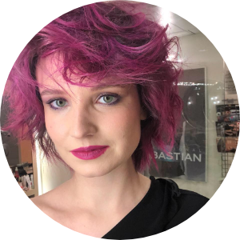

Александр
Столетов
Генеральный продюсер
Увлечен новыми форматами социального взаимодействия в искусстве, в том числе, через иммерсивный виртуальный опыт. Работает с кино, анимацией, а также VR/AR проектами в Москве и Берлине.

Валерия
Йонсен
Оператор-постановщик
В своем визуальном языке придерживается атмосферы мрачной и сказочной эстетики.

Марина
Буланцева
Креативный продюсер
видео, арт- и медиапроектов. Из тьмы и хаоса проявляет идеи, объединяет вокруг себя талантливых людей, чтобы вместе создавать миры невероятной сложности и красоты.

Вероника
Роот
Арт директор
В каждую работу вносит смысловую сложность, выстраивая уникальные визуальные истории. Наработанный персональный стиль включает элементы барокко, символизма и постмодернистских направлений.